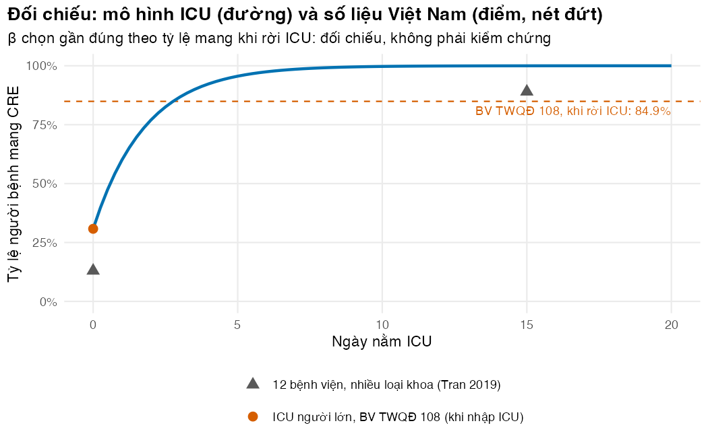
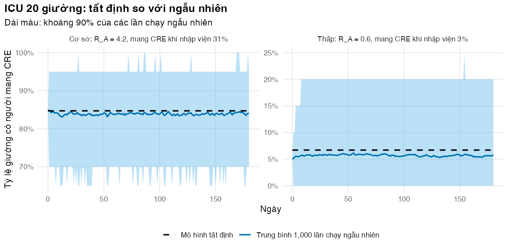

Xây mô hình tất định và ngẫu nhiên cho một ICU, rồi định lượng tác động của sàng lọc kèm phòng ngừa tiếp xúc
Vì sao bạn nên quan tâm?
Ở các khoa hồi sức tích cực của Bệnh viện Trung ương Quân đội 108, 31% người bệnh đã mang CRE ngay khi nhập ICU, và 85% mang CRE khi rời ICU (Toàn và c.s. 2024): nghĩa là cứ 100 người nhập ICU thì có thêm khoảng 54 người mắc phải CRE ngay trong khoa, tức hơn một nửa số người nhập ICU. Một lần cấy phết trực tràng sàng lọc CRE có giá dịch vụ BHYT 261,000 VNĐ (Bộ Y tế 2024), gần bằng 7 bát phở. Một ICU 20 giường nhận khoảng 1,140 lượt người bệnh mỗi năm, nên chỉ riêng sàng lọc khi nhập viện đã tốn khoảng 298 triệu VNĐ, bằng 56 tháng lương tối thiểu vùng I. Bài này giúp bạn ước lượng sàng lọc kèm phòng ngừa tiếp xúc cắt được bao nhiêu ca lây trong khoa trước khi xin khoản kinh phí đó.
Mục tiêu học tập
Sau bài này, bạn có thể:
Viết hệ phương trình cho định cư (colonisation) Enterobacterales kháng carbapenem (carbapenem-resistant Enterobacterales, CRE) trong một khoa luôn kín giường, có người mang khuẩn nhập vào từ ngoài (importation) và lây truyền tại chỗ.
Tính hệ số lây nhiễm trong khoa \(R_A\) và tỷ lệ định cư lúc cân bằng, rồi dùng chúng để kiểm tra lời giải của deSolve.
Thêm sàng lọc và phòng ngừa tiếp xúc (contact precautions, PNTX), và định lượng số ca định cư mới tránh được.
Mô phỏng khoa bằng thuật toán Gillespie và giải thích khi nào cần mô hình ngẫu nhiên (stochastic) thay cho mô hình tất định (deterministic).
Ý chính
Bệnh viện khác cộng đồng: quần thể nhỏ, người bệnh vào ra liên tục, và nhiều người đã mang vi khuẩn kháng thuốc ngay khi nhập viện.
Đơn vị lây truyền là định cư, không phải nhiễm khuẩn. Phần lớn người mang CRE không có triệu chứng nhưng vẫn là nguồn lây.
\(R_A = \beta/\mu\) là số người mang mới do một người mang tạo ra trong khoa chưa ai mang khuẩn. Khi người mang khuẩn liên tục nhập viện, CRE không biến mất dù \(R_A < 1\); kiểm soát nhiễm khuẩn làm giảm chứ không loại trừ.
Hiệu quả của sàng lọc kèm PNTX phụ thuộc vào độ nhạy, độ trễ trả kết quả, tần suất sàng lọc và mức PNTX làm giảm lây truyền.
Trong khoa nhỏ, may rủi quyết định nhiều: cùng tham số, khoa này bùng phát còn khoa kia không có ca nào (Cooper, Medley, và Scott 1999). Mô hình tất định chỉ mô tả trung bình.
Đối chiếu mô hình với dữ liệu Việt Nam chưa phải kiểm chứng độc lập khi tham số đã được chọn gần đúng theo chính dữ liệu đó, và cũng chưa phải hiệu chuẩn (xem M08).
Nội dung
Vì sao bệnh viện cần mô hình riêng
Mô hình SIR ở M05 giả định quần thể lớn và gần như khép kín. Một ICU thì chỉ vài chục giường, người bệnh ở lại vài ngày đến vài tuần, và mỗi lượt nhập viện có thể mang vi khuẩn kháng thuốc vào. Mô hình ngăn có dòng nhập viện và ra viện là điểm xuất phát phổ biến (van Kleef và c.s. 2013). Trong điều tra năm 2012–2013, các ICU người lớn ở Việt Nam có trung vị 20 giường và thời gian nằm ICU trung bình khoảng 6.4 ngày (Phu và c.s. 2016). Một điều tra cắt ngang ở 12 bệnh viện, gồm cả khoa sơ sinh, nhi và người lớn, cho thấy 13% người bệnh mang CRE ngay ngày nhập viện và 89% ở ngày nằm viện thứ 15 (Tran và c.s. 2019). Ở ICU người lớn của Bệnh viện Trung ương Quân đội 108, một bệnh viện hạng đặc biệt (VOV 2023), tỷ lệ mang khi nhập ICU còn cao hơn: 30.8% (Toàn và c.s. 2024). CRE vào khoa theo hai đường: người mang khuẩn nhập vào từ ngoài (importation) và lây truyền tại chỗ. Các tổng quan về mô hình hóa lây truyền vi khuẩn kháng thuốc trong bệnh viện là điểm khởi đầu để đọc thêm (Bonten, Austin, và Lipsitch 2001; Grundmann và Hellriegel 2006).
Mô hình ngăn cho một ICU
Khoa có \(N\) giường luôn kín: mỗi người ra viện được thay ngay bằng một người nhập viện. Thời gian nằm khoa trung bình là \(1/\mu\) ngày; mỗi người nhập viện mang CRE với xác suất \(\varphi\), tức tỷ lệ mang khuẩn khi nhập viện (admission prevalence).
flowchart LR IN["Nhập viện"] -->|"1 − φ"| U["U: chưa mang CRE"] IN -->|"φ, sàng lọc âm tính giả<br/>hoặc không sàng lọc"| Cu["Cu: mang CRE,<br/>chưa phát hiện"] IN -->|"φ, sàng lọc dương tính"| Cd["Cd: mang CRE,<br/>đã phát hiện + PNTX"] U -->|"lực lây nhiễm λ"| Cu Cu -->|"sàng lọc lặp lại"| Cd U --> OUT["Ra viện"] Cu --> OUT Cd --> OUT
flowchart LR
IN["Nhập viện"] -->|"1 − φ"| U["U: chưa mang CRE"]
IN -->|"φ, sàng lọc âm tính giả<br/>hoặc không sàng lọc"| Cu["Cu: mang CRE,<br/>chưa phát hiện"]
IN -->|"φ, sàng lọc dương tính"| Cd["Cd: mang CRE,<br/>đã phát hiện + PNTX"]
U -->|"lực lây nhiễm λ"| Cu
Cu -->|"sàng lọc lặp lại"| Cd
U --> OUT["Ra viện"]
Cu --> OUT
Cd --> OUT
Trong bài này chưa có phát hiện lâm sàng, và sàng lọc được coi là đặc hiệu hoàn hảo; Bài 5 bổ sung cả hai. Ký hiệu \(\lambda\) là lực lây nhiễm (force of infection), không phải ngưỡng chi phí-hiệu quả. Với hệ số lây truyền (transmission rate) \(\beta\), và PNTX làm giảm lây truyền từ người đã phát hiện một tỷ lệ \(\varepsilon\):
Gọi \(s_e\) là độ nhạy của xét nghiệm sàng lọc và \(\sigma\) là tần suất sàng lọc lặp lại. Hệ phương trình là
\[
\begin{aligned}
\frac{dU}{dt} &= \mu N (1-\varphi) - \lambda U - \mu U, \\
\frac{dC_u}{dt} &= \mu N \varphi (1-s_e) + \lambda U - \sigma s_e C_u - \mu C_u, \\
\frac{dC_d}{dt} &= \mu N \varphi s_e + \sigma s_e C_u - \mu C_d.
\end{aligned}
\]
Không sàng lọc thì \(s_e = \sigma = 0\). Cộng ba phương trình được \(d(U + C_u + C_d)/dt = 0\): số giường được bảo toàn, phép kiểm tra đầu tiên cho mọi lời giải số.
Khi không sàng lọc, đặt \(p = C_u/N\) và cho đạo hàm bằng 0, ta được phương trình bậc hai \(\beta p^2 + (\mu - \beta)p - \mu\varphi = 0\), với nghiệm dương
Nếu không ai mang khuẩn khi nhập viện (\(\varphi = 0\)), nghiệm trở về kết quả quen thuộc \(p^* = 1 - 1/R_A\) khi \(R_A = \beta/\mu > 1\). Khi \(\varphi > 0\), ta luôn có \(p^* > 0\): người mang khuẩn nhập vào từ ngoài giữ CRE tồn tại trong khoa dù lây truyền yếu.
Sàng lọc và phòng ngừa tiếp xúc
Sàng lọc khi nhập viện phát hiện người mang khuẩn từ ngoài vào; sàng lọc lặp lại phát hiện người mắc phải trong khoa. Người đã phát hiện được PNTX nên lây ít hơn. Nếu mọi người mang khuẩn được phát hiện ngay, hệ số lây nhiễm trong khoa giảm còn \(\beta(1-\varepsilon)/\mu\). Chương trình kiểm soát CRE thực tế gần như luôn là gói nhiều biện pháp (PNTX, sàng lọc chủ động, cách ly hoặc chăm sóc theo nhóm, vệ sinh tay, làm sạch môi trường), và các nghiên cứu bán thực nghiệm về chúng được đánh giá là chất lượng từ rất thấp đến thấp (Tomczyk và c.s. 2019). Trong một nghiên cứu ở ba ICU nhi của Bệnh viện Nhi Trung ương, sàng lọc khi nhập viện kèm chăm sóc theo nhóm đi kèm với giảm tỷ lệ mắc phải CRE giữa các thời kỳ nhập viện (Garpvall và c.s. 2021); đó là so sánh theo thời kỳ, chưa đủ để kết luận nhân quả.
Tất định (deterministic) hay ngẫu nhiên (stochastic)?
Hệ phương trình mô tả hành vi trung bình của một khoa rất lớn. Trong ICU 20 giường, việc người mang khuẩn ra viện trước hay lây cho người khác trước là chuyện may rủi; với quần thể nhỏ như vậy, cách tiếp cận ngẫu nhiên là cần thiết (Cooper, Medley, và Scott 1999).
Thuật toán Gillespie mô phỏng từng sự kiện: tính tốc độ của mọi sự kiện (ra viện, lây truyền, phát hiện), rút thời gian chờ từ phân phối mũ với tốc độ bằng tổng các tốc độ, rồi chọn sự kiện với xác suất tỷ lệ với tốc độ của nó. Kiểm tra mã bằng một kết quả lý thuyết: khi một người mang khuẩn vào khoa có vô số giường trống, mỗi sự kiện tiếp theo là “lây” với xác suất \(\beta/(\beta+\mu)\) hoặc “ra viện” với xác suất \(\mu/(\beta+\mu)\), nên chuỗi lây truyền tắt sớm với xác suất \(1/R_A\) khi \(R_A > 1\). Công thức này chỉ đúng khi nguồn người chưa mang khuẩn gần như vô hạn.
Thực hành
Số giường và thời gian nằm ICU lấy từ điều tra các ICU người lớn ở Việt Nam (Phu và c.s. 2016), tỷ lệ mang CRE khi nhập ICU lấy từ Bệnh viện Trung ương Quân đội 108 (Toàn và c.s. 2024). Hệ số lây truyền, hiệu quả của PNTX và độ nhạy của xét nghiệm là giá trị minh họa, nên kết quả về sàng lọc chỉ minh họa phương pháp. Đoạn mã đầu nạp hàm và tham số, đặt số lần chạy ngẫu nhiên và số ngày mô phỏng.
if (!isTRUE(l10n_info()[["UTF-8"]])) invisible(Sys.setlocale("LC_CTYPE", "en_US.UTF-8"))source("../_shared/R/helpers.R")source("../_shared/R/vn_data.R") # course-wide values: vn_context(), vn_prices(), vn_mx(), inflate_vnd()source("code/model.R")library(ggplot2)p <-read_all_params()N_SIM <-1000# stochastic runs (more gives smoother intervals)DAYS <-180# simulated daysINTRO_DAYS <-60# follow-up for the single-introduction experimentBIG_FACTOR <-10# the "large ward" check multiplies the number of beds by thisN_EXT <-500# runs of the early-extinction check in the large wardEXT_DAYS <-40# follow-up of that check (long enough for early die-out to be settled)
Bắt đầu từ một khoa chưa ai mang CRE và giải hệ phương trình bằng deSolve::ode(). Kiểm tra: tổng các ngăn luôn bằng số giường, và lời giải số sau 180 ngày trùng với nghiệm giải tích \(p^*\).
# The pure transmission model of this lesson: no clinical detection (clinical = FALSE) and,# below, perfect specificity. Lesson 5 adds both.pp <-ward_parms(p, "usual", clinical =FALSE)unlist(pp)
N mu phi beta eps se sp sigma
20.00000 0.15625 0.30800 0.65000 0.50000 0.00000 1.00000 0.00000
delay clin phi_trend
0.00000 0.00000 0.00000
RA <-ward_RA(pp)prev_eq <-ward_equilibrium(pp)# Start with no carriers at all: admissions bring CRE in, transmission does the resty_empty <-ward_init(pp, prev =0)det0 <-run_ward_det(pp, DAYS, y_empty)det0$prev <- (det0$Cu + det0$Cp + det0$Cd) / pp$Nround(det0[c(1, 8, 31, 91, 181), c("time", "U", "Cu", "prev", "Acq")], 2)
# Checks: beds always full; the ODE settles at the analytic equilibriumstopifnot(all(abs(ward_total(det0) - pp$N) <1e-6),abs(det0$prev[nrow(det0)] - prev_eq) <1e-4)c(RA = RA, prev_eq = prev_eq)
RA prev_eq
4.1600000 0.8470254
# How long does the ward take to get close to its equilibrium?days_to_95 <- det0$time[which(det0$prev >=0.95* prev_eq)[1]]days_to_95
[1] 9
Với các tham số này, \(R_A\) = 4.2 và khoa ổn định ở mức 84.7% số giường có người mang CRE. Mô hình đạt 95% mức này sau 9 ngày.
Hệ số \(\beta\) là giá trị minh họa, được chọn gần đúng để tỷ lệ mang CRE khi rời ICU trong mô hình gần với số liệu của Bệnh viện Trung ương Quân đội 108. Vì vậy phần đối chiếu dưới đây không phải kiểm chứng độc lập; hiệu chuẩn thật sự (có mục tiêu, hàm khoảng cách và bất định) nằm ở M08. Khi không sàng lọc, người ra viện là một mẫu ngẫu nhiên của các giường, nên tỷ lệ mang CRE lúc ra viện bằng tỷ lệ lưu hành \(p^*\). Ở trạng thái cân bằng, một người chưa mang khuẩn bị lây với nguy cơ tức thời (hazard) không đổi \(\lambda = \beta p^*\), nên tỷ lệ mang CRE theo ngày nằm ICU là \(1 - (1-\varphi)e^{-\lambda d}\).
# Comparison with the adult ICUs of the 108 Military Central Hospital (Toan et al. 2024): 30.8% carry# CRE on admission, 84.9% when they leave the ICU. Without screening, discharges are a random sample# of the beds, so the share carrying CRE at discharge is the equilibrium prevalence p*. A patient who# arrives without CRE acquires it at the constant hazard lambda = beta * p*, so the share carrying CRE# by day of stay is 1 - (1 - phi) exp(-lambda d).lambda <- pp$beta * prev_eqday <-seq(0, 20, by =0.25)carriage <-1- (1- pp$phi) *exp(-lambda * day)# Mean carriage at discharge with exponential stays: 1 - (1 - phi) mu / (mu + lambda); must equal p*carriage_discharge <-1- (1- pp$phi) * pp$mu / (pp$mu + lambda)stopifnot(abs(carriage_discharge - prev_eq) <1e-8)# Day of ICU stay at which the model reaches the day-15 carriage of the mixed wards in Tran et al.day_tran_level <--log((1- p$tran_prev_d15) / (1- pp$phi)) / lambdaround(c(lambda = lambda, model_discharge = carriage_discharge, toan_discharge = p$toan_prev_discharge,day_model_reaches_tran_d15 = day_tran_level), 3)
# The same study reports how long patients took to acquire CRE in the ICU (before the intervention).# With a constant hazard lambda the mean time to acquisition is 1 / lambda: compare the two.tab_fv <-attr(p, "table")time_acq_ci <-unlist(tab_fv[tab_fv$name =="toan_time_acq", c("low", "high")])time_acq_model <-1/ lambdaacq_conflict <- time_acq_model < time_acq_ci[["low"]] # model acquires faster than the whole 95% CIround(c(model_days_to_acquire = time_acq_model, toan_days_to_acquire = p$toan_time_acq,ci_low = time_acq_ci[["low"]], ci_high = time_acq_ci[["high"]]), 1)
obs <-data.frame(day =c(0, 0, p$tran_day),carriage =c(p$phi_adm, p$tran_prev_adm, p$tran_prev_d15),source =c("ICU người lớn, BV TWQĐ 108 (khi nhập ICU)", rep("12 bệnh viện, nhiều loại khoa (Tran 2019)", 2)))fig_fv <-ggplot(data.frame(day, carriage), aes(day, carriage)) +geom_hline(yintercept = p$toan_prev_discharge, linetype ="dashed", colour = pal_course[2]) +annotate("text", x =20, y = p$toan_prev_discharge -0.04, hjust =1, size =3.2, colour = pal_course[2],label =sprintf("BV TWQĐ 108, khi rời ICU: %s", fmt_pct(p$toan_prev_discharge, 1))) +geom_line(colour = pal_course[1], linewidth =1) +geom_point(data = obs, aes(colour = source, shape = source), size =3) +# levels sort alphabetically: "12 bệnh viện..." (Tran, grey) first, then the 108 ICU (orange, like the dashed line)scale_colour_manual(values =c("grey35", pal_course[2]), name =NULL) +scale_shape_manual(values =c(17, 16), name =NULL) +scale_y_continuous(labels =function(x) paste0(100* x, "%"), limits =c(0, 1)) +labs(x ="Ngày nằm ICU", y ="Tỷ lệ người bệnh mang CRE",title ="Đối chiếu: mô hình ICU (đường) và số liệu Việt Nam (điểm, nét đứt)",subtitle ="β chọn gần đúng theo tỷ lệ mang khi rời ICU: đối chiếu, không phải kiểm chứng") +guides(colour =guide_legend(nrow =2), shape =guide_legend(nrow =2)) +theme_course()save_fig(fig_fv, "l03-face-validity.png", width =7, height =4.4)

Đối chiếu tỷ lệ người bệnh mang CRE theo ngày nằm ICU: mô hình (đường) và số liệu Việt Nam (điểm và nét đứt).
Mô hình cho 84.7% người bệnh mang CRE khi rời ICU, so với 84.9% trong số liệu; đây chính là điểm mà \(\beta\) được chọn theo. Một người không mang khuẩn khi nhập ICU bị lây với nguy cơ 0.55 mỗi ngày, nên mô hình đạt mức 89% (mức của ngày thứ 15 ở khoa hỗn hợp trong điều tra của Tran và cộng sự) chỉ sau 3.3 ngày. ICU lây nhanh hơn khoa hỗn hợp là hợp lý (người bệnh nặng, nhiều thủ thuật, nhiều tiếp xúc của nhân viên), nhưng đây chỉ là so sánh hai quần thể khác nhau, không phải kiểm chứng.
Đây là chỗ mô hình và số liệu mâu thuẫn. Cũng nghiên cứu đó ghi nhận thời gian đến khi mắc phải CRE trong ICU khoảng 10 ngày (KTC 95% 9–12) ở giai đoạn trước can thiệp (Toàn và c.s. 2024), còn mô hình cho \(1/\lambda\) = 1.8 ngày. Mô hình phải cho lây rất nhanh mới đạt 85% khi rời ICU sau chỉ 6.4 ngày nằm (số của điều tra các ICU khác); nếu ICU của Bệnh viện 108 nằm lâu hơn thì cần lây chậm hơn. Hiệu chuẩn thật sự (M08) phải khớp đồng thời tỷ lệ mang khi rời ICU, thời gian đến khi mắc phải và thời gian nằm ICU; vì chưa làm vậy, hãy đọc các kết quả định lượng của Bài 3 và Bài 5 như minh họa phương pháp.
Thêm sàng lọc khi nhập viện và hằng tuần, kèm PNTX, với giả định kết quả có ngay (Bài 5 thêm thời gian chờ). Cả hai kịch bản bắt đầu từ trạng thái lưu hành. Kiểm tra: số ca mắc mới giảm và số giường vẫn được bảo toàn.
# Screening on admission and weekly + contact precautions, with results available at# once (Lesson 5 adds the delay). Start from the endemic state.pp_scr <-ward_parms(p, "culture", clinical =FALSE)pp_scr$delay <-0pp_scr$sp <-1# perfect specificity here; Lesson 5 adds false positivesy_end <-ward_init(pp)det_usual <-run_ward_det(pp, DAYS, y_end)det_scr <-run_ward_det(pp_scr, DAYS, y_end)scr_tab <-data.frame(scenario =c("Không sàng lọc", "Sàng lọc + PNTX"),prev_day180 =c(sum(unlist(det_usual[DAYS +1, c("Cu", "Cp", "Cd")])),sum(unlist(det_scr[DAYS +1, c("Cu", "Cp", "Cd")]))) / pp$N,acquisitions =c(det_usual$Acq[DAYS +1], det_scr$Acq[DAYS +1]),cp_days =c(det_usual$CPdays[DAYS +1], det_scr$CPdays[DAYS +1]))scr_show <- scr_tab # round a copy for printing; scr_tab stays exact for the textscr_show[, -1] <-round(scr_show[, -1], 2)scr_show
acq_averted_share <-1- scr_tab$acquisitions[2] / scr_tab$acquisitions[1]# For comparison only: after a bundle (hand hygiene, active screening, isolation) the 108 ICUs saw# 52.5% carriage at ICU exit; the model has screening + precautions aloneprev_scr_180 <- scr_tab$prev_day180[2]round(c(model_screening_day180 = prev_scr_180, toan_after_bundle = p$toan_prev_discharge_post), 3)
stopifnot(scr_tab$acquisitions[2] < scr_tab$acquisitions[1],all(abs(ward_total(det_scr) - pp$N) <1e-6))# Reproduction number if every carrier were detected and under precautionsRA_all_detected <- pp$beta * (1- pp$eps) / pp$muRA_all_detected
[1] 2.08
Sau 180 ngày, sàng lọc kèm PNTX tránh được 11% số ca định cư mắc phải trong khoa (hiệu quả của PNTX là minh họa). Ngay cả khi phát hiện được mọi người mang khuẩn, \(R_A\) chỉ giảm còn 2.08, vẫn trên 1. Tỷ lệ mang CRE trong khoa giảm từ 85% xuống 79%. Sau một gói can thiệp gồm cả tăng cường vệ sinh tay, sàng lọc chủ động và cách ly, Bệnh viện 108 ghi nhận tỷ lệ mang CRE khi rời ICU giảm còn 52.5% (Toàn và c.s. 2024). Mô hình chỉ có sàng lọc và PNTX nên giảm ít hơn. Một cách giải thích là vệ sinh tay (giảm β cho mọi người) đóng góp đáng kể; cách khác là mô hình và số liệu lệch nhau ở những điểm đã nêu ở trên. So sánh trước-sau này không đủ để kết luận nhân quả.
Chuyển sang mô hình ngẫu nhiên, bắt đầu bằng phép kiểm tra lý thuyết: một người mang khuẩn vào khoa không ai mang, không có người mang khuẩn nhập thêm. Ta chạy 1,000 lần và đếm tỷ lệ lần chạy không còn người mang khuẩn sau 60 ngày.
# Stochastic: one carrier enters an otherwise CRE-free ward and nobody else brings CRE in.# Branching-process theory: probability that the chain dies out early is about 1 / RA.pp_intro <- pppp_intro$phi <-0y_one <-c(U = pp$N -1, Cu =1, Cp =0, Cd =0)set.seed(303)extinct <-logical(N_SIM)for (i inseq_len(N_SIM)) { g <-ward_gillespie(pp_intro, INTRO_DAYS, y_one) last_row <- INTRO_DAYS +1 extinct[i] <- (g$Cu[last_row] + g$Cp[last_row] + g$Cd[last_row]) ==0}p_extinct <-mean(extinct)se_small <-sqrt(p_extinct * (1- p_extinct) / N_SIM)round(c(simulated = p_extinct, theory =1/ RA, se = se_small), 3)
simulated theory se
0.280 0.240 0.014
# In a 20-bed ward the pool of non-carriers runs short, so die-out should be MORE likely than 1 / RAstopifnot(p_extinct >1/ RA -3* se_small)
Tỷ lệ tắt sớm là 28.0% (sai số chuẩn 1.4%), cao hơn giá trị lý thuyết 24%. Ở khoa 20 giường nguồn người chưa mang khuẩn cạn dần nên ta chỉ kỳ vọng đúng chiều đó. Để kiểm tra chính công thức, ta lặp lại ở khoa 200 giường, nơi nguồn này gần như không cạn, và đòi hỏi khớp trong 3 sai số chuẩn.
# The result 1 / R_A holds for a practically unlimited pool of non-carriers. Test it where that is# true: a 200-bed ward. A 3-standard-error band is a tight test, so a real bug would show.pp_ext <- pp_intropp_ext$N <- BIG_FACTOR * pp$Ny_one_big <-c(U = pp_ext$N -1, Cu =1, Cp =0, Cd =0)set.seed(306)ext_big <-logical(N_EXT)for (i inseq_len(N_EXT)) { g <-ward_gillespie(pp_ext, EXT_DAYS, y_one_big) ext_big[i] <- (g$Cu[EXT_DAYS +1] + g$Cp[EXT_DAYS +1] + g$Cd[EXT_DAYS +1]) ==0}p_ext_big <-mean(ext_big)se_ext <-sqrt(p_ext_big * (1- p_ext_big) / N_EXT)RA_eff <- pp_ext$beta * (1-1/ pp_ext$N) / pp_ext$mu # one carrier already uses one bedround(c(simulated = p_ext_big, theory =1/ RA_eff, se = se_ext), 3)
simulated theory se
0.236 0.242 0.019
stopifnot(abs(p_ext_big -1/ RA_eff) <3* se_ext)
Ở khoa lớn, tỷ lệ tắt sớm là 23.6% (sai số chuẩn 1.9%), khớp giá trị lý thuyết 24.2%.
Tiếp theo, ta chạy 1,000 lần cho khoa ở kịch bản cơ sở và ở kịch bản “khoa ít CRE”, giống một bệnh viện tuyến huyện: chỉ 2.7% người bệnh mang vi khuẩn sinh carbapenemase khi nhập viện, như ở bốn bệnh viện tuyến huyện năm 2022 (Doshi và c.s. 2026), và lây truyền yếu (\(R_A\) = 0.64, giá trị minh họa). Bảng cuối cho tỷ lệ định cư theo mô hình tất định, trung bình và khoảng 90% của các lần chạy, và xác suất khoa không có người mang khuẩn nào ở ngày 180.
# 1,000 stochastic runs of the 20-bed ICU (endemic start) vs the deterministic model,# for the base case and for a district-hospital-like ward (low importation, Doshi et al. 2026;# illustrative low transmission)# Whole patients at a given carriage prevalence (beds stay full)y0_int <-function(pp_x, prev) {c(U = pp_x$N -round(pp_x$N * prev), Cu =round(pp_x$N * prev), Cp =0, Cd =0)}run_many <-function(pp_x, y0, n_sim, days) { prev <-matrix(NA_real_, days +1, n_sim)for (i inseq_len(n_sim)) { g <-ward_gillespie(pp_x, days, y0) prev[, i] <- (g$Cu + g$Cp + g$Cd) / pp_x$N } prev}pp_low <- pppp_low$phi <- p$phi_lowpp_low$beta <- p$beta_lowscen <-list(base = pp, low = pp_low)stoch_df <-NULLfor (s innames(scen)) { pp_s <- scen[[s]] y0_s <-y0_int(pp_s, ward_equilibrium(pp_s))set.seed(304) prev <-run_many(pp_s, y0_s, N_SIM, DAYS) det_s <-run_ward_det(pp_s, DAYS, ward_init(pp_s)) stoch_df <-rbind(stoch_df, data.frame(scenario = s, day =0:DAYS,det = (det_s$Cu + det_s$Cp + det_s$Cd) / pp_s$N,mean =rowMeans(prev),lo =apply(prev, 1, quantile, 0.05), hi =apply(prev, 1, quantile, 0.95),p_zero =rowMeans(prev ==0) ))}last <- stoch_df[stoch_df$day == DAYS, ]round(last[, -1], 3)
day det mean lo hi p_zero
181 180 0.847 0.840 0.7 0.95 0.00
362 180 0.067 0.057 0.0 0.20 0.47
RA_low <- pp_low$beta / pp_low$mup_zero_low <- last$p_zero[last$scenario =="low"]# Stochastic mean vs deterministic value in the base ward (positive = stochastic mean is lower)gap_base <- last$det[last$scenario =="base"] - last$mean[last$scenario =="base"]# Stochastic mean must stay close to the deterministic path; a large gap would signal a bugstopifnot(abs(gap_base) <0.08)
Hình vẽ cùng kết quả: đường tất định, trung bình các lần chạy ngẫu nhiên và dải 90%. Kiểm tra: so đường trung bình với đường tất định, và so độ rộng của dải ở hai khoa.
scen_vi <-c(base =sprintf("Cơ sở: R_A = %s, mang CRE khi nhập viện %s",fmt_num(RA, 1), fmt_pct(pp$phi, 0)),low =sprintf("Thấp: R_A = %s, mang CRE khi nhập viện %s",fmt_num(RA_low, 1), fmt_pct(pp_low$phi, 0)))stoch_df$scenario_vi <-factor(scen_vi[stoch_df$scenario], levels = scen_vi)fig_stoch <-ggplot(stoch_df, aes(day)) +geom_ribbon(aes(ymin = lo, ymax = hi), fill = pal_course[5], alpha =0.4) +geom_line(aes(y = mean, colour =sprintf("Trung bình %s lần chạy ngẫu nhiên", fmt_num(N_SIM))),linewidth =0.8) +geom_line(aes(y = det, colour ="Mô hình tất định"), linetype ="dashed", linewidth =0.8) +facet_wrap(~scenario_vi, scales ="free_y") +scale_colour_manual(values =c(pal_course[8], pal_course[1]), name =NULL) +scale_y_continuous(labels =function(x) paste0(100* x, "%")) +labs(x ="Ngày", y ="Tỷ lệ giường có người mang CRE",title =sprintf("ICU %s giường: tất định so với ngẫu nhiên", fmt_num(pp$N)),subtitle ="Dải màu: khoảng 90% của các lần chạy ngẫu nhiên") +theme_course()save_fig(fig_stoch, "l03-det-vs-stoch.png", width =8.5, height =4.2)

Tỷ lệ giường có người mang CRE: mô hình tất định và 1,000 lần chạy ngẫu nhiên trong ICU 20 giường.
Ở kịch bản cơ sở, trung bình các lần chạy ngẫu nhiên (84%) thấp hơn mô hình tất định (85%) 0.7 điểm phần trăm. Khi trung bình ngẫu nhiên thấp hơn, lý do là khoa luôn kín giường nên \(U = N - C\); khi \(C\) dao động, trung bình của tích \(U \cdot C\) nhỏ hơn tích các trung bình, và lây truyền trung bình yếu đi. Quan trọng hơn, một khoa cụ thể có thể dao động trong khoảng rất rộng. Ở khoa ít CRE, mô hình tất định nói luôn có khoảng 1.3 người mang khuẩn. Mô hình ngẫu nhiên nói khoa không có ai mang CRE ở ngày 180 trong 47% số lần chạy.
Cuối cùng, kiểm tra rằng mô hình tất định là giới hạn của mô hình ngẫu nhiên khi số giường lớn. Ta tăng số giường lên gấp 10 lần và so trung bình các lần chạy ngẫu nhiên với lời giải ODE.
# Law of large numbers: in a 200-bed ward the stochastic mean tracks the ODE closelypp_big <- pppp_big$N <- BIG_FACTOR * pp$Nset.seed(305)prev_big <-run_many(pp_big, y0_int(pp_big, 0.2), 50, 60)det_big <-run_ward_det(pp_big, 60, ward_init(pp_big, prev =0.2))gap_big <-max(abs(rowMeans(prev_big) - (det_big$Cu + det_big$Cp + det_big$Cd) / pp_big$N))gap_big
[1] 0.01088598
stopifnot(gap_big <0.03)
Với khoa 200 giường, chênh lệch lớn nhất giữa hai đường chỉ là 1.1 điểm phần trăm.
Mẹo thực hành
Luôn viết phép kiểm tra bảo toàn số giường cho cả mô hình tất định lẫn ngẫu nhiên. Một dấu sai trong một dòng phương trình sẽ bị phát hiện ngay.
Kiểm tra mã ngẫu nhiên bằng một kết quả lý thuyết đã biết, như xác suất tắt sớm \(1/R_A\), trước khi dùng nó cho câu hỏi mới.
Báo cáo kết quả ngẫu nhiên bằng phân phối (khoảng, xác suất không có ca), không chỉ trung bình.
Lỗi thường gặp
Mô hình hóa nhiễm khuẩn thay vì định cư. Bỏ qua người mang khuẩn không triệu chứng sẽ đánh giá thấp lây truyền và đánh giá thấp lợi ích của sàng lọc.
Quên người mang khuẩn nhập vào từ ngoài. Mô hình khép kín sẽ dự báo loại trừ được CRE khi \(R_A < 1\), điều không xảy ra khi người mang khuẩn vẫn liên tục nhập viện.
Dùng mô hình tất định để trả lời câu hỏi về bùng phát trong một khoa nhỏ. Xác suất “không có ca nào” hay “nhiều ca cùng lúc” chỉ trả lời được bằng mô hình ngẫu nhiên.
Gọi việc chỉnh \(\beta\) cho khớp một con số là “hiệu chuẩn” hay “kiểm chứng”. Hiệu chuẩn cần mục tiêu, hàm khoảng cách và đánh giá độ bất định (M08); và một giá trị đã chọn theo số liệu thì không thể dùng chính số liệu đó để kiểm chứng. Bài này chỉ gọi là đối chiếu.
Bài tập
Bài 1 (dễ). Giả sử mọi người mang CRE được phát hiện ngay khi nhập viện. PNTX phải giảm lây truyền ít nhất bao nhiêu để \(R_A\) dưới 1?
# Exercise 1: smallest precaution effect that would push RA below 1 if every carrier# were detected at onceeps_crit <-1- pp$mu / pp$betaeps_crit
[1] 0.7596154
# Where does the illustrative precaution effect sit relative to the threshold? (words for the text)eps_rel <-if (abs(p$eps_cp - eps_crit) <0.005) "vừa đúng bằng"elseif (p$eps_cp > eps_crit) "cao hơn"else"thấp hơn"eps_consequence <-if (abs(p$eps_cp - eps_crit) <0.005) ", nên khoa nằm ở ranh giới"elseif (p$eps_cp > eps_crit) ", nên $R_A$ xuống dưới 1 khi mọi người mang khuẩn được phát hiện"else", nên $R_A$ vẫn trên 1 dù mọi người mang khuẩn được phát hiện"
PNTX phải giảm lây truyền hơn 76%. Giá trị minh họa của \(\varepsilon\) là 50%, thấp hơn ngưỡng này, nên \(R_A\) vẫn trên 1 dù mọi người mang khuẩn được phát hiện.
Bài 2 (vừa). Một ICU có tỷ lệ mang CRE khi nhập viện như các ICU nhi trong nghiên cứu của Garpvall và cộng sự, với cùng hệ số lây truyền và thời gian nằm ICU của bài. Tính tỷ lệ mang CRE lúc cân bằng và tỷ lệ ca mắc mới tránh được nhờ sàng lọc kèm PNTX.
Lời giải
# Exercise 2: an ICU whose admission prevalence matches the paediatric ICUs of# Garpvall et al. (2021), with this lesson's transmission and length of stayphi_g <- p$garpvall_adm_pos / p$garpvall_adm_npp_g <- pppp_g$phi <- phi_gpp_g_scr <- pp_scrpp_g_scr$phi <- phi_gy_g <-ward_init(pp_g)acq_g <-c(usual =run_ward_det(pp_g, DAYS, y_g)$Acq[DAYS +1],screening =run_ward_det(pp_g_scr, DAYS, y_g)$Acq[DAYS +1])round(c(phi = phi_g, prev_eq =ward_equilibrium(pp_g), acq_g,averted_share =1- acq_g[["screening"]] / acq_g[["usual"]]), 3)
Với \(\varphi\) = 35.8%, khoa ổn định ở 86%. Sàng lọc kèm PNTX tránh được 11% số ca mắc mới, so với 11% ở ICU của bài (tỷ lệ mang khi nhập 30.8%). Hai con số gần như bằng nhau: khi nhiều người mang khuẩn từ ngoài vào hơn, sàng lọc khi nhập viện phát hiện được nhiều người hơn, nhưng cũng còn ít người chưa mang khuẩn để bảo vệ hơn, và hai tác động này gần như bù trừ nhau.
Bài 3 (khó). Ở khoa ít CRE, so sánh số người mang khuẩn theo mô hình tất định với xác suất khoa không có ai mang khuẩn ở ngày cuối. Trưởng khoa kiểm soát nhiễm khuẩn nên dùng con số nào để lập kế hoạch?
Lời giải
# Exercise 3: chance that the low-importation ward has no carrier on day 180,# vs what the deterministic model saysround(c(stochastic_p_zero = p_zero_low,deterministic_carriers = last$det[last$scenario =="low"] * pp$N), 3)
Mô hình tất định cho 1.3 người mang khuẩn, một con số không bao giờ quan sát được; khoa trống CRE ở 47% số lần chạy. Cần cả hai: trung bình để dự trù vật tư PNTX, phân phối để chuẩn bị cho bùng phát.
Tài liệu tham khảo
Bonten, M. J., D. J. Austin, và M. Lipsitch. 2001. “Understanding the spread of antibiotic resistant pathogens in hospitals: mathematical models as tools for control”. Clinical Infectious Diseases 33 (10): 1739–46. https://doi.org/10.1086/323761.
Cooper, B. S., G. F. Medley, và G. M. Scott. 1999. “Preliminary analysis of the transmission dynamics of nosocomial infections: stochastic and management effects”. Journal of Hospital Infection 43 (2): 131–47. https://doi.org/10.1053/jhin.1998.0647.
Doshi, Jaslyn, Thai Duy Pham, Yen Ngoc Pham, Thuy Thu Ma, Linh Thuy Duong, Qingbin Li, Thanh Ha Nguyen, và c.s. 2026. “Multidrug-resistant organism carriage in Vietnamese district hospitals before and after an antimicrobial stewardship intervention”. Antimicrobial Resistance and Infection Control 15 (1). https://doi.org/10.1186/s13756-026-01752-5.
Garpvall, K., V. Duong, S. Linnros, T. N. Quốc, D. Mucchiano, S. Modeen, và c.s. 2021. “Admission screening and cohort care decrease carbapenem resistant enterobacteriaceae in Vietnamese pediatric ICU’s”. Antimicrobial Resistance and Infection Control 10 (1): 128. https://doi.org/10.1186/s13756-021-00994-9.
Grundmann, H., và B. Hellriegel. 2006. “Mathematical modelling: a tool for hospital infection control”. The Lancet Infectious Diseases 6 (1): 39–45. https://doi.org/10.1016/S1473-3099(05)70325-X.
Phu, Vu Dinh, Heiman F L Wertheim, Mattias Larsson, Behzad Nadjm, Quynh-Dao Dinh, Lennart E Nilsson, Ulf Rydell, và c.s. 2016. “Burden of Hospital Acquired Infections and Antimicrobial Use in Vietnamese Adult Intensive Care Units”. PLoS One 11 (1): e0147544. https://doi.org/10.1371/journal.pone.0147544.
Toàn, Nguyễn Quang, Nguyễn Thị Kim Phương, Bùi Tiến Sỹ, Nguyễn Thị Nghiên, Lê Thị Hằng, Nguyễn Thị Hằng, Lê Thị Hải Yến, và Đặng Thị Hạnh. 2024. “Đánh giá hiệu quả một số biện pháp can thiệp nhằm làm giảm nhiễm khuẩn bệnh viện tại các đơn vị Hồi sức tích cực, Bệnh viện Trung ương Quân đội 108”. Tạp chí Y Dược lâm sàng 108 19. https://doi.org/10.52389/ydls.v0i0.2296.
Tomczyk, Sara, Veronica Zanichelli, M. Lindsay Grayson, Anthony Twyman, Mohamed Abbas, Daniela Pires, và c.s. 2019. “Control of carbapenem-resistant Enterobacteriaceae, Acinetobacter baumannii, and Pseudomonas aeruginosa in healthcare facilities: a systematic review and reanalysis of quasi-experimental studies”. Clinical Infectious Diseases 68 (5): 873–84. https://doi.org/10.1093/cid/ciy752.
Tran, Dien M., Mattias Larsson, Linus Olson, Ngoc T. B. Hoang, Ngai K. Le, Dung T. K. Khu, và c.s. 2019. “High prevalence of colonisation with carbapenem-resistant Enterobacteriaceae among patients admitted to Vietnamese hospitals: risk factors and burden of disease”. Journal of Infection 79 (2): 115–22. https://doi.org/10.1016/j.jinf.2019.05.013.
van Kleef, Esther, Julie V. Robotham, Mark Jit, Sarah R. Deeny, và William J. Edmunds. 2013. “Modelling the transmission of healthcare associated infections: a systematic review”. BMC Infectious Diseases 13: 294. https://doi.org/10.1186/1471-2334-13-294.